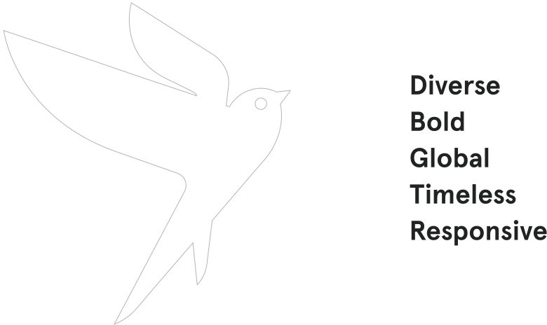
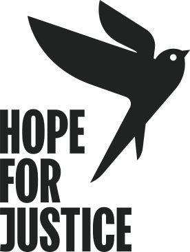
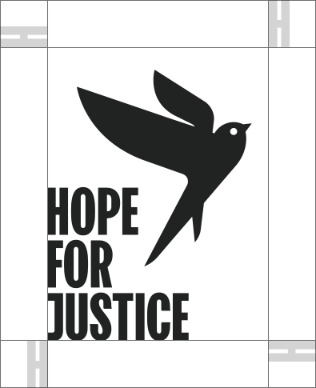
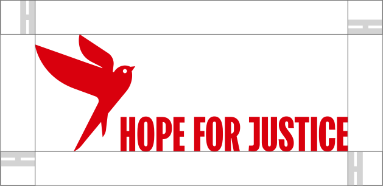
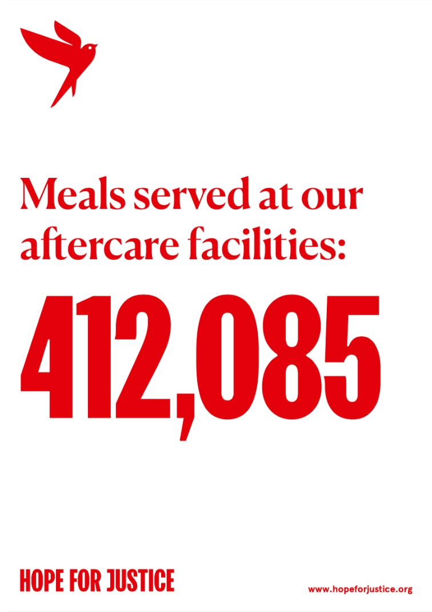
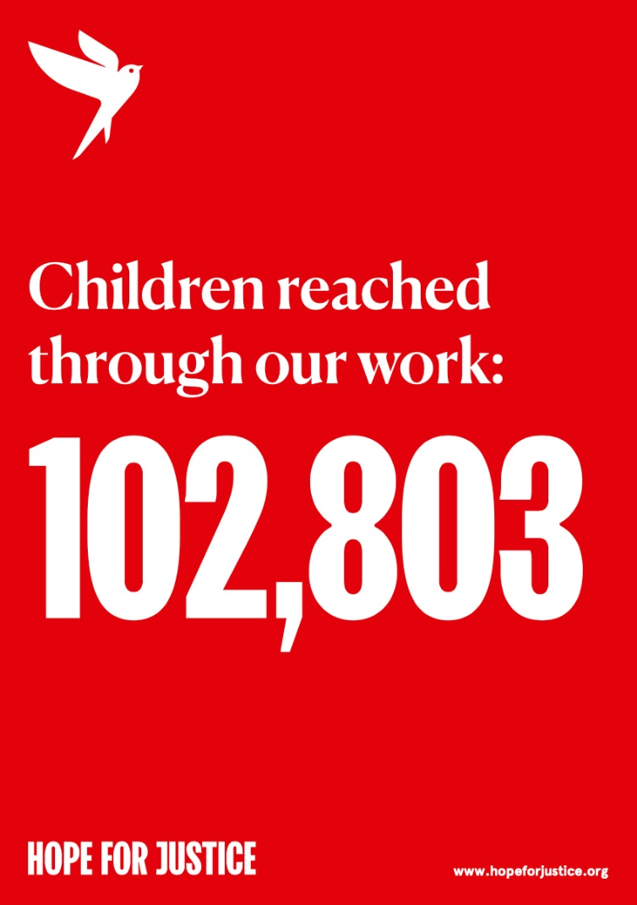
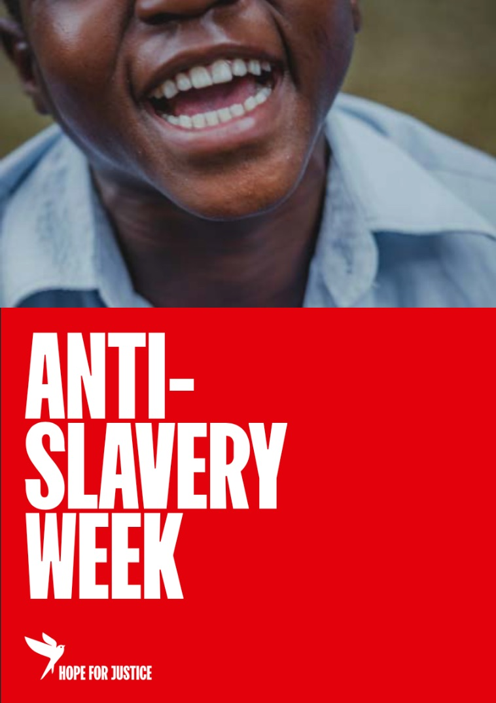
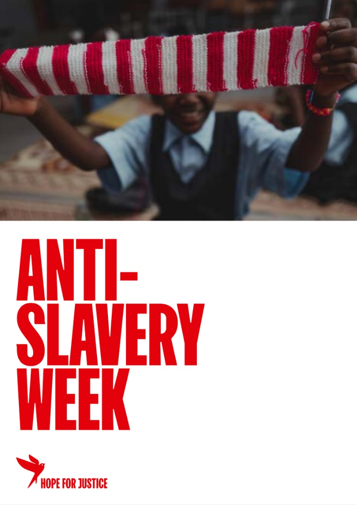
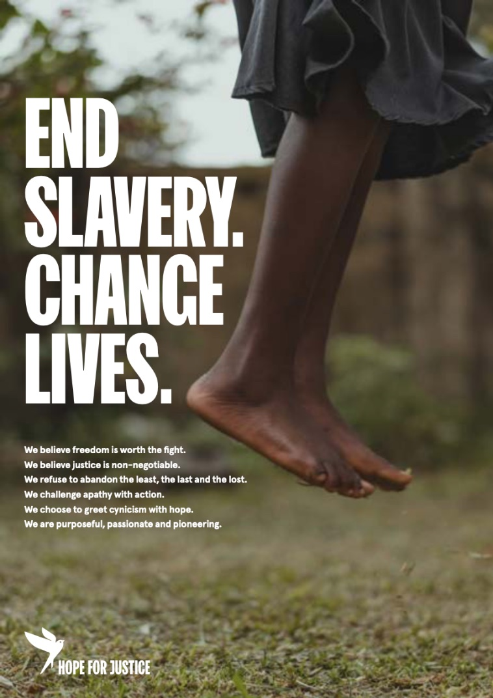
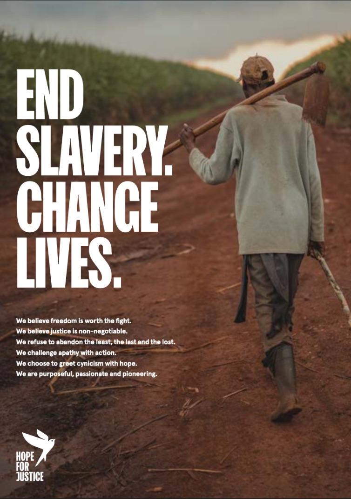

Brand Identity
01colours - Primary
Respecting the brand's heritage the colour scheme has been chosen to convey a strong and confident voice, embracing a forward-step and aligning it in the modern cultural landscape. Our primary brand colors are red, white and black. They are used to convey our brand values while providing accessibility, simplicity, and consistency throughout all brand communications.
Use Pantone colours where possible.
Hope for Justice Red
PANTONE | 2035C /U
CMYK | 0 100 100 0
RGB | 214 0 28
HEX | D6001C
Hope for Justice Black
PANTONE | 419 C/U
CMYK | 76 65 66 90
RGB | 33 35 34
HEX | 212322
Plain White
PANTONE | N/A
CMYK | 0 0 0 0
RGB | 255 255 255 255
HEX | FFFFFF
Freedom Wall Grey
PANTONE | N/A
CMYK | 47 34 29 10
RGB | 142 158 148
HEX | 8E949E
1.2colours - secondary
Dark purple
PANTONE | 5255C/U
CMYK | 68 67 40 67
RGB | 49 51 55
HEX | 312937
Light Blue
PANTONE | 2141C/U
CMYK | 44 10 0 0
RGB | 139 190 232
HEX | 8BBEE8
Yellow
PANTONE | 1225C/U
CMYK | 0 16 80 0
RGB | 255 200 69
HEX | FFC845
Green
PANTONE | 2249C/U
CMYK | 64 3 57 3
RGB | 92 170 127
HEX | 5CAA7F
1.3colours - tints
A tint is a percentage of a solid colour. Using tints allows for a variation in tone, whilst using only one spot colour. It’s economical and consistent while providing the designer with more scope when it comes to the supporting colour palette.
Use them in increments of 10%.
02Typography
Our typography has been selected to convey powerful, emotive messages while instiling a sense of authority.
FK Screamer Legacy is a key element in our brand. It works to maintain consistency, create clarity, and provide a clear voice for the brand as a global leader in the fight against slavery. It has been chosen based on its activist style in order to maximize its impact across all applications while keeping it easy to read, ownable, and highly recognisable.
Canela Medium has been chosen for its authority in delivering editorial style messages to the audience while providing a juxtaposition to the powerful bold characters of FK Screamer.
To complement both these typefaces and be agile across all platforms, Apercu was selected to be used for smaller applications such as sub-headers and body copy.
Headlines, statements and key facts
FK SCREAMER LEGACY
Headlines and quotes - Secondary font
Canela Medium
Headlines and body copy
Apercu regular
Apercu italic
Apercu bold
2.1Type Examples
PREVENT
RESCUE
RESTORE
REFORM
We exist to bring an end to modern slavery by preventing exploitation, rescuing victims, restoring lives and reforming society.
End slavery. change lives.
We’re out to change
the world
Children reached
through our work:
102,803
03Logos
Our symbol is the embodiment of our mission to change lives. The sustaining hope and optimism that we can and will live in a better world

3.1Logo - systems
Our 5 logos offer a range of possibilities for representing the brand across different communication platforms.
The logo marque is the core logo of the Hope for Justice brand. Embodying the mission to change lives and end slavery.
The logotype can be used stand alone or to supplement the logo marque when the Hope for Justice brand needs reinforcing, this diversity allows the marque and logotype to be expressed in different ways to multiple target audiences.
The logoform connects the Hope for Justice name to the marque and communicates both parts of the brand in the most direct way.
Logo marque
Logo type

3.2Logo - exclusion zone
An exclusion zone has been designed to create a clear space around the logo. To ensure clarity, it is important that other elements do not enter the exclusion zone.
The exclusion zone is based upon the height of the logotype. To maintain a strong brand image it is important that the logos are always applied consistently and never manipulated or distorted.


04Photography
Goal: To convey a sense of hope and the transformative actions of Hope for Justice.
Casting: People are relatable and diverse
Interactions: Express support
Compositions: Ensure negative space and convey a sense of optimism
Lighting and colour: Natural with increased contrast
Portraits: Simple, powerful and direct
Portrait style images can be used to connect with the audience and are intended to grab their attention where time is critical (e.g. fund raising/advertising campaigns, website home page). The photography must convey a strong sense of purpose, empowering the audience.
4.1Client protection
In circumstances where the identity of our clients must be withheld focus on details of the individual to convey their story, for example their hands or the back of the head with the subject in thought or engaged in an everyday acitivity.
There should be no elements within the photographs that make the subject identifiable (e.g. eyes, tattoos, specific jewellery, written names).
05Application examples
The composition system has been designed to be simple and flexible across all applications. The minimal style of the composition allows for maximum impact of messaging and imagery without any distractions. The use of these grid systems will help to achieve a consistent look across all marketing material.






Hope for Justice is a 501(c)(3) not for profit organization in the USA, a registered charity in England & Wales (no. 1126097) and in Scotland (no. SC045769), and a company limited by guarantee, registered in England and Wales, number 6563365. In Norway, Hope for Justice AS is registered under Organisasjonsnummer 915 520 995.